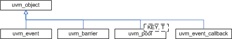

Synchronization Classes

The UVM provides event and barrier synchronization classes for managing concurrent processes.
- uvm_event#(T) - UVM’s event class augments the SystemVerilog event datatype with such services as setting callbacks and data delivery.
- uvm_barrier - A barrier is used to prevent a pre-configured number of processes from continuing until all have reached a certain point in simulation.
- uvm_event_pool and uvm_barrier_pool - The event and barrier pool classes are specializations of uvm_object_string_pool #(T) used to store collections of ~uvm_event#(uvm_object)~s and uvm_barriers, respectively, indexed by string name. Each pool class contains a static, “global” pool instance for sharing across all processes.
- uvm_event_callback - The event callback is used to create callback objects that may be attached to uvm_event#(T)s.
Summary